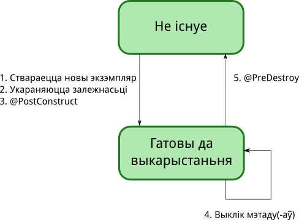
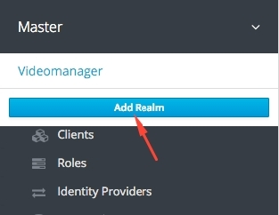
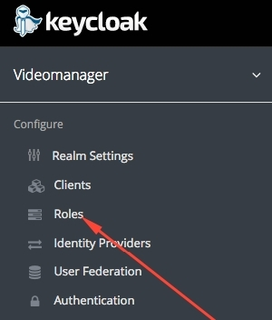
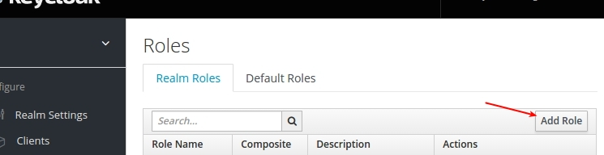
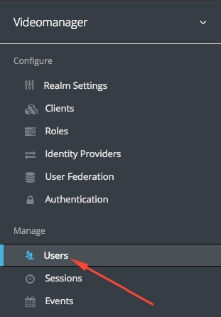
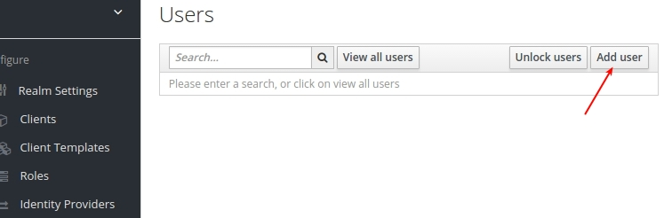
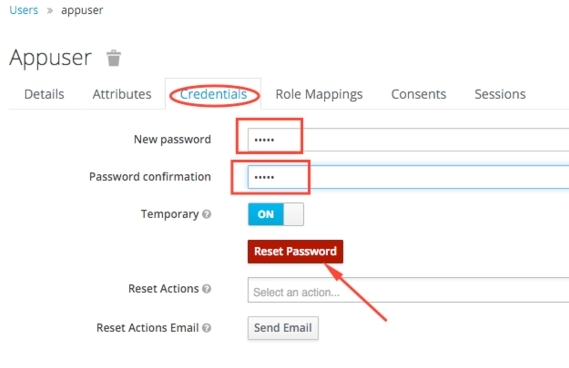
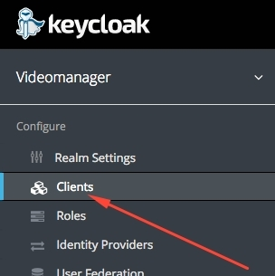
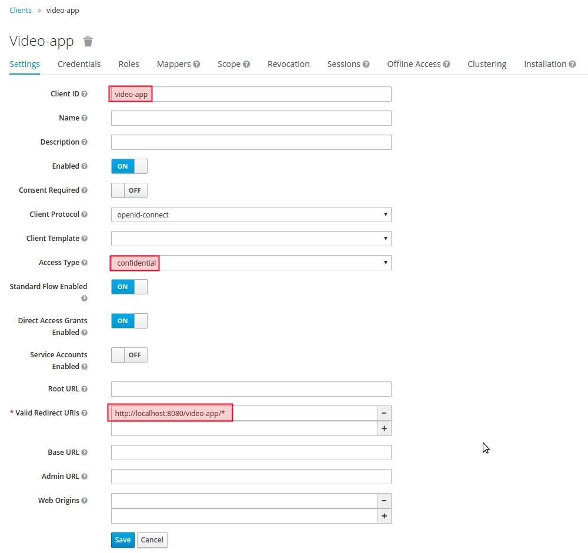
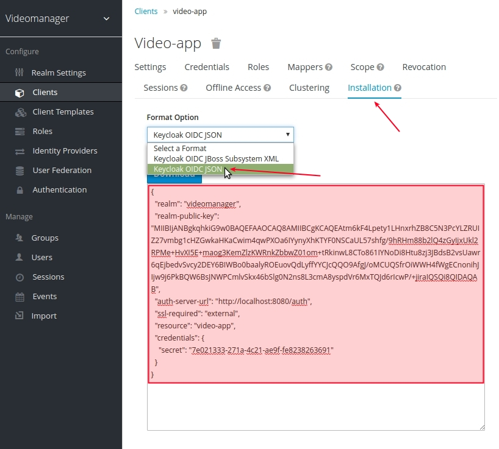

JEE
Рэсурсы
Books on Java EE and Related Technologies
Screencasts: Adam Bien (у храналягічным парадку)
IntelliJ IDEA: JavaEE 7 Screencasts
ZEEF: Arjan Tijms, Abhishek Gupta
Спэцыфікацыі
Зялёным тлом пазначаныя спэцыфікацыі, якія ўвайшлі ў Web Profile (JEE 6 і JEE 7) – гэта падмноства спэцыфікацыяў з JEE, актуальнае для распрацоўкі сеціўных праграмаў.
| Тэхналёгія | J2EE 1.4 (11.11.03) JSR 151 | Tutorial |
JEE 5 (11.05.06) JSR 244 | Tutorial |
JEE 6 (10.12.09) JSR 316 | Tutorial |
JEE 7 (16.06.13) JSR 342 | Tutorial |
||||
|---|---|---|---|---|---|---|---|---|
| Вэрсія | JSR | Вэрсія | JSR | Вэрсія | JSR | Вэрсія | JSR | |
| Тэхналёгіі сеціўных праграмаў: | ||||||||
| Java Servlet | 2.4 | JSR 154 | 2.5 | JSR 154 | 3.0 | JSR 315 | 3.1 | JSR 340 |
| JSF | 1.1 | JSR 127 | 1.2 | JSR 252 | 2.0 | JSR 314 | 2.2 | JSR 344 |
| EL | 2.2 | JSR 245 | 3.0 | JSR 341 | ||||
| JSP | 2.0 | JSR 152 | 2.1 | JSR 245 | 2.2 | JSR 245 | 2.3 | JSR 245 |
| JSTL | 1.1 | JSR 52 | 1.2 | JSR 52 | 1.2 | JSR 52 | 1.2 | JSR 52 |
| Java API for WebSocket | 1.0 | JSR 356 | ||||||
| Тэхналёгіі enterprise праграмаў: | ||||||||
| Dependency Injection | 1.0 | JSR 330 | 1.0 | JSR 330 | ||||
| Contexts and Dependency Injection | 1.0 | JSR 299 | 1.1 | JSR 346 | ||||
| Bean Validation | 1.0 | JSR 303 | 1.1 | JSR 349 | ||||
| EJB | 2.1 | JSR 153 | 3.0 | JSR 220 | 3.1 | JSR 318 | 3.2 | JSR 345 |
| JPA | 1.0 | JSR 220 | 2.0 | JSR 317 | 2.1 | JSR 338 | ||
| JTA | 1.0 | 1.1 | JSR 907 | 1.1 | JSR 907 | 1.2 | JSR 907 | |
| JMS | 1.1 | 1.1 | JSR 914 | 1.1 | JSR 914 | 2.0 | JSR 343 | |
| JavaMail API | 1.3 | 1.4 | JSR 919 | 1.4 | JSR 919 | 1.5 | JSR 919 | |
| JCA | 1.5 | JSR 112 | 1.5 | JSR 112 | 1.6 | JSR 322 | 1.7 | JSR 322 |
| Concurrency Utilities for Java EE | 1.0 | JSR 236 | ||||||
| Тэхналёгіі сеціўных сэрвісаў: | ||||||||
| Web Services | 1.0 | 1.2 | JSR 109 | 1.3 | JSR 109 | 1.3 | JSR 109 | |
| Web Services Metadata | 2.0 | JSR 181 | 2.1 | JSR 181 | 2.1 | JSR 181 | ||
| JAX-RS | 1.1 | JSR 311 | 2.0 | JSR 339 | ||||
| JSON-P | 1.0 | JSR 353 | ||||||
| JAX-WS | 2.0 | JSR 224 | 2.2 | JSR 224 | 2.2 | JSR 224 | ||
| JAX-RPC | 1.1 | 1.1 | JSR 101 | 1.1 | JSR 101 | 1.1 | JSR 101 | |
| JAXM | 1.1 | 1.3 | JSR 67 | 1.3 | JSR 67 | |||
| JAXR | 1.0 | 1.0 | JSR 93 | 1.0 | JSR 93 | 1.0 | JSR 93 | |
| Тэхналёгіі JSE, якія маюць дачыненьне да JEE: | ||||||||
| Common Annotations | 1.0 | JSR 250 | 1.1 | JSR 250 | 1.2 | JSR 250 | ||
| JDBC | 3.0 | JSR 54 | 3.0 | JSR 54 | 4.0 | JSR 221 | 4.1 | JSR 221 |
| JNDI | 1.2 | |||||||
| JAAS | 1.0 | 1.0 | 1.0 | 1.0 | ||||
| JAXB | 2.0 | JSR 222 | 2.2 | JSR 222 | 2.2 | JSR 222 | ||
| JAXP | 1.2 | 1.2 | 1.2 | 1.3 | JSR 206 | |||
| StAX | 1.0 | JSR 173 | 1.0 | JSR 173 | 1.0 | JSR 173 | ||
| JMX | 1.2 | JSR 3 | ||||||
| JAF | 1.0 | 1.1 | JSR 925 | 1.1 | JSR 925 | 1.1 | JSR 925 | |
Дэскрыптары разгортваньня
my-app
`-- src
`-- main
|-- java
| `...
|-- resources
| |
| `--META-INF
| |-- application.xml - JavaEE
| |-- application-client.xml - JavaEE
| |-- persistence.xml - JPA
| `-- ra.xml - JCA
`-- webapp
|
`--WEB-INF
|-- beans.xml - CDI
|-- ejb-jar.xml - EJB
|-- faces-config.xml - JSF
|-- validation.xml - Beans Validation
|-- web.xml - Servlet
|-- web-fragment.xml - Servlet
`-- webservices.xml - Web-services SOAP
web.xml
<web-app version="3.0" xmlns="http://java.sun.com/xml/ns/javaee"
xmlns:xsi="http://www.w3.org/2001/XMLSchema-instance"
xsi:schemaLocation="http://java.sun.com/xml/ns/javaee http://java.sun.com/xml/ns/javaee/web-app_3_0.xsd">
</web-app>
beans.xml
<beans xmlns="http://xmlns.jcp.org/xml/ns/javaee"
xmlns:xsi="http://www.w3.org/2001/XMLSchema-instance"
xsi:schemaLocation="http://xmlns.jcp.org/xml/ns/javaee http://xmlns.jcp.org/xml/ns/javaee/beans_1_1.xsd"
bean-discovery-mode="all">
</beans>
faces-config.xml
<faces-config version="2.2"
xmlns="http://xmlns.jcp.org/xml/ns/javaee"
xmlns:xsi="http://www.w3.org/2001/XMLSchema-instance"
xsi:schemaLocation="http://xmlns.jcp.org/xml/ns/javaee http://xmlns.jcp.org/xml/ns/javaee/web-facesconfig_2_2.xsd">
</faces-config>
persistence.xml
<persistence version="2.1"
xmlns="http://xmlns.jcp.org/xml/ns/persistence"
xmlns:xsi="http://www.w3.org/2001/XMLSchema-instance"
xsi:schemaLocation="http://xmlns.jcp.org/xml/ns/persistence http://xmlns.jcp.org/xml/ns/persistence/persistence_2_1.xsd">
<persistence-unit name="primary">
<!-- If you are running in a production environment, add a managed
data source, this example data source is just for devleopment and testing! -->
<!-- The datasource is deployed as WEB-INF/hibernate4-quickstart-ds.xml, you can
find it in the source at src/main/webapp/WEB-INF/hibernate4-quickstart-ds.xml -->
<jta-data-source>java:jboss/datasources/Hibernate4QuickstartDS</jta-data-source>
<properties>
<!-- Properties for Hibernate -->
<property name="hibernate.hbm2ddl.auto" value="create-drop" />
<property name="hibernate.show_sql" value="false" />
</properties>
</persistence-unit>
</persistence>
Біны і CDI
Амаль любая Java-кляса з канструктарам без парамэтраў, альбо з канструктарам пазначаным анатацыяй @Inject, зьяўляецца кампанэнтам, кіруемым кантэйнэрам (managed bean). Акрамя патрабаваньня да канструктараў ёсьць яшчэ некалькі патрабаваньняў да кіруемых біноў:
- яны павінны быць верхняга ўзроўню (top-level), то бок не nested;
- ня могуць быць не-статычнымі ўнутранымі клясамі (з унутраных клясаў толькі статычныя могуць быць кіруемымі бінамі);
- яны павінны быць пэўнымі клясамі (не абстрактнымі), альбо мець анатацыю
@Decorator; - не павінны быць пазначаныя як EJB праз адпаведную анатацыю, альбо праз файл
ejb-jar.xml.
Калі кляса адпавядае ўсім вышэйпералічаным патрабаваньням, яе жыцьцёвым цыклям можа кіраваць кантэйнэр, а таксама рабіць іньекцыю (inject) у яе іншых клясаў ці біноў.
Жыцьцёвы цыкл кампанэнтаў
Вобласьці бачнасьці і кантэкст
Кожны экзэмпляр кіруемага біна, які быў створаны кантэйнэрам праз службу CDI, зьяўляецца кантэкстуальным экзэмплярам, то бок ён існуе выключна ў межах пэўнага кантэксту і доступ да яго маюць толькі тыя іншыя аб'екты, якія існуюць у межах таго ж самага кантэксту. Кантэйнэр аўтаматычна стварае экзэмпляр кіруемага біна, калі нейкі іншы аб'ект мае ў ім патрэбу. Кантэйнэр разбурае раней створаны ім экзэмпляр, калі той кантэкст заканчваецца.
Усяго існуе 5 убудаваных кантэкстаў:
| Кантэкст | Анатацыя | Працягласьць |
|---|---|---|
| Запросу | @RequestScoped |
Узаемадзеяньне аднаго карыстальніка з праграмай цягам аднаго HTTP-запыту. |
| Сэсіі | @SessionScoped |
Узаемадзеяньне аднаго карыстальніка з праграмай цягам шэрагу HTTP-запыту, якія складаюць адну сэсію з праграмай. |
| Праграмы | @ApplicationScoped |
Падзяляе стан паміж усімі карыстальнікамі праграмы цягам усяго жыцьця праграмы. |
| Залежны | @Dependent |
Змоўчны кантэкст, калі яўна не пазначаны. Азначае, што аб'ект створаны, каб служыць дакладна аднаму кліенту (іншаму біну), і жыве столькі ж, колькі і кліент. |
| Дыялёгу | @ConversationScoped |
Працягласьць гэтага кантэксту пашыраецца на шэраг HTTP-запытаў аднаго карыстальніка. Дакладная працягласьць гэтага шэрагу вызначаецца распрацоўшчыкам, але не можа "перасякаць" межы адной сэсіі. |
Request scoped біны альбо залежныя біны, чый кліент зьяўляецца request scoped біном, могуць не быць serizalizable. Астатнія кантэкстуальныя біны (кантэксту сэсіі, праграмы, дыялёгу, а таксама залежныя ад такіх біноў) павінны быць serizalizable.
@Inject
Як мы ўжо пазначылі вышэй, кантэйнэр акрамя кіраваньня жыцьцём біна можа ўбудоўваць (рабіць іньекцыю) у яго неабходныя яму рэсурсы альбо іншыя біны. Што можа ўбудоўвацца:
- амаль любая Java-кляса;
- Session beans;
- JavaEE-рэсурсы: крыніцы даных (data sources), JMS-topics, чэргі, фабрыкі злучэньняў (conncetion factories) і падобнае;
- persistent conexts (аб'екты
EntityManagerз JPA); - палі-вытворцы (producer fields);
- аб'екты, якія вяртаюцца мэтадамі-вытворцамі (producer methods);
- спасылкі на вэб-сэрвісы;
- спасылкі на адлеглыя EJB.
Іньекцыя робіцца пры дапамозе анатацыі @Inject:
import javax.inject.Inject;
public class Printer {
@Inject Greeting greeting;
...
}
У дадзеным прыкладзе аб'ект Greeting будзе аўтаматычна падстаўлены (створаны новы альбо ўзяты існуючы, калі ў дадзеным кантэксьце ён ужо існуе) у поле greeting ствараемага экзэмпляра клясы Printer. Пры гэтым нават не абавязкова мець public setter да гэтага поля, кантэйнэр зробіць іньекцыю нават у прыватнае поле.
Кваліфікатары
Кантэйнэр спрабуе знайсьці кандыдата для іньекцыі па тыпу аб'екта. Калі ж кантэйнэр знаходзіць некалькі раўназначных кандыдатаў, ён кіне выключэньне. У наступным прыкладзе кантэйнэр ня здолее выбраць паміж SuperCar і CrossOver для іньекцыі ў поле car і кіне выключэньне:
public class SuperCar implements Car {...}
public class Crossover implements Car {...}
public class Garage {
@Inject Car car;
}
Для таго, каб вырашыць гэтую праблему, служаць кваліфікатары – анатацыі-маркеры, якія аб'яўляюцца пры дапамозе анатацыі @Qualifier:
@Qualifier
@Retention(RUNTIME)
@Target({TYPE, METHOD, FIELD, PARAMETER})
public @interface Parkable {}
Тады вышэйзгаданы канфліктны прыклад можна перапісаць наступным чынам:
public class SuperCar implements Car {...}
@Parkable
public class Crossover implements Car {...}
public class Garage {
@Inject @Parkable Car car;
}
Тым самым мы кажам кантэйнэру, што для іньекцыі ў дадзеным месцы падыходзіць не любы Car, але толькі той, які пазначаны анатацыяй-маркерам @Parkable. Кантэйнэр здолее адназначна выбраць адзін кандыдат для іньекцыі і выключэньня ня будзе.
Кваліфікатары можна камбінаваць, то бок пазначаць адну і тую ж клясу ці месца іньекцыі некалькімі кваліфікатарамі. Акрамя гэтага іх можна парамэтрызаваць. Прывядзем ніжэй 2 варыянты рэалізаваць адну і тую ж задуму. Першы варыянт пры дапамозе множных кваліфікатараў:
@Qualifier @Retention(RUNTIME) @Target({TYPE, METHOD, FIELD, PARAMETER})
public @interface Number {}
@Qualifier @Retention(RUNTIME) @Target({TYPE, METHOD, FIELD, PARAMETER})
public @interface Odd {}
public class Game {
@Inject @Number @Odd int num;
...
}
Другі варыянт пры дапамозе аднаго кваліфікатара, але з парамэтрамі:
@Qualifier @Retention(RUNTIME) @Target({TYPE, METHOD, FIELD, PARAMETER})
public @interface Number {
boolean odd();
}
public class Game {
@Inject @Number(odd = true) int num;
...
}
@Default
@Default – гэта ўбудаваны і пры гэтым змоўчны кваліфікатар. То бок, калі пры аб'яўленьні біна не пазначана ніякага яўнага кваліфікатара, ён аўтаматычна пазначаецца кваліфікатарам @Default. Калі ў момант убудаваньня залежнасьці, кантэйнэр вызначыць некалькі кандыдатаў, пры гэтым усе акрамя аднаго будуць пазначаныя яўнымі кваліфікатарамі, а адзін не будзе пазначаны, а таксама ў пункце ўбудаваньня не будзе пазначана яўнага кваліфікатара, тады кантэйнэр ня кіне выключэньне і падставіць @Default-кандыдата.
@Alternative
Анатацыяй @Alternative можна пазначыць не прыярытэтны, а наадварот непажаданы кандыдат(-аў) для іньекцыі:
@Alternative
public class SuperCar implements Car {...}
public class Crossover implements Car {...}
public class Garage {
@Inject Car car;
}
Адзіны спосаб, каб кантэйнэр усё ж мог яго выбраць для іньекцыі – актываваць яго ў дэскрыптары beans.xml:
<beans xmlns="http://xmlns.jcp.org/xml/ns/javaee"
xmlns:xsi="http://www.w3.org/2001/XMLSchema-instance"
xsi:schemaLocation="http://xmlns.jcp.org/xml/ns/javaee http://xmlns.jcp.org/xml/ns/javaee/beans_1_1.xsd"
version="1.1"
bean-discovery-mode="all">
<alternatives>
<class>some.package.SuperCar</class>
</alternatives>
</beans>
@Vetoed
Можна таксама ўвогуле выключыць нейкую клясу пры абраньні кандыдатаў для іньекцыі праз анатацыю @Vetoed.
@Any і выбар з альтэрнатываў
Анатацыяй @Any звычайна пазначаецца месца іньекцыі і кажа кантэйнэру, каб ён убудаваў усе магчымыя кандыдаты (сьпіс). Пазьней можна прабягацца па гэтаму сьпісу і выбіраць патрэбны кандыдат у рантайм:
@Named("atm")
public class AutomatedTellerMachineImpl implements AutomatedTellerMachine {
@Inject @Any
private Instance<ATMTransport> allTransports;
private ATMTransport transport;
private boolean useJSON = true;
private boolean behindFireWall = true;
@PostConstruct
protected void init() {
ATMTransport soapTransport, jsonTransport, standardTransport;
standardTransport = allTransports.select(new AnnotationLiteral<Soap>() {}).get();
jsonTransport = allTransports.select(new AnnotationLiteral<Json>() {}).get();
soapTransport = allTransports.select(new AnnotationLiteral<Default>() {}).get();
if (!behindFireWall) {
transport = standardTransport;
} else {
if (useJSON) {
transport = jsonTransport;
} else {
transport = soapTransport;
}
}
}
}
@Named
Анатацыяй @Named пазначаюцца біны, да якіх павінны мець доступ вью па іх імёнах:
@Named
@RequestScoped
public class Game implements Serializable {
...
}
<!DOCTYPE html>
<head>...</head>
<body>
<div>
Your guess:
<h:inputText id="inputGuess" value="#{game.guess}"
required="true" size="3"
disabled="#{game.number eq game.guess}"
validator="#{game.validateNumberRange}" />
<h:commandButton id="guessButton" value="Guess"
action="#{game.check}"
disabled="#{game.number eq game.guess}" />
</div>
</body>
</html>
Улічваючы, што змоўчным кантэкстам (ці вобласьцю бачнасьці) біна, калі яўна не пазначана, зьяўляецца @Dependent, што не падыходзіць у якасьці мадэлі для вью (таму што даныя, якія туды трапілі з вью, будуць адразу страчаныя), і разам з анатацыяй @Named заўсёды прыходзіцца пазначаць анатацыю @RequestScoped, стандартам CDI была ўведзеная дапаможная анатацыя @Model, якая проста камбінуе @Named і @RequestScoped:
@Model
public class Game implements Serializable {
...
}
@New
Калі ў месцы ўбудаваньня залежнасьці пажадана мець заўсёды ўнікальны аб'ект, які ня будзе падзяляцца з іншымі кантэкстамі (аб'ектамі), можна выкарыстоўваць анатацыю @New. У гэтым выпадку кантэйнэр будзе заўсёды ствараць новы аб'ект, а не спрабаваць падставіць ужо існуючы.
@Produces і @Disposes
Анатацыя @Produces прадстаўляе мэханізм рабіць іньекцыі ня толькі біноў і JEE-рэсурсаў. Такім чынам могуць быць іньектаваны:
- прымітыўныя тыпы (
int,booleanі інш.); - масівы і калекцыі;
- аб'екты кшталту
java.util.Dateальбоjava.lang.String; - аб'екты, чыя дакладная кляса будзе вядома толькі ў часе выкананьня праграмы;
- аб'екты, якія патрабуюць дадатковай ініцыялізацыі.
Некалькі прыкладаў:
@Qualifier @Retention(RUNTIME) @Target({ TYPE, METHOD, PARAMETER, FIELD })
public @interface Random {}
@ApplicationScoped
public class Generator implements Serializable {
private java.util.Random random = new java.util.Random(System.currentTimeMillis());
private int maxNumber = 100;
@Produces @Random // Гэты мэтад стварае экзэмпляр Random
int next() {
return random.nextInt(maxNumber - 1) + 1;
}
}
@SessionScoped
public class Game implements Serializable {
@Inject @Random // У гэтае поле падстаўляецца папярэдне створаны экзэмпляр Random
Instance<Integer> randomNumber; // Instance - гэта сьпіс, які мае ітэратар. У агульным
// выпадку кандыдатаў на падстаноўку можа быць некалькі
// (некалькі @Default), тады сюды падставіцца не адно
// значэньне, а ўсе знойдзеныя. Можна рабіць так
// randomNumber.iterator().next()
...
}
...
@Produces
public List<String> getGreetings() {
List<String> response = new ArrayList<String>();
...
return response;
}
@Inject List<String> list;
...
@Produces-мэтад можа ў якасьці аргумэнту прымаць InjectionPoint – доступ да асяродку іньекцыі:
class Loggers {
@Produces Logger getLogger(InjectionPoint injectionPoint) {
return Logger.getLogger( injectionPoint.getMember().getDeclaringClass().getSimpleName() );
}
}
@SessionScoped
public class Permissions implements Serializable {
@Inject Logger log; // Так можна рабіць у кожным месцы, дзе патрэбны логер
// і кожны раз будзе стварацца логер для адпаведнай клясы
...
}
З-за таго, што ў выпадку мэтаду-вытворцы кантэйнэр губляе кіраваньне вырашэньнем залежнасьцей і іх вобласьці бачнасьці, трэба быць уважлівым, каб не парушыць цэльнасьць. Разгледзім такі прыклад:
@Produces @Preferred @SessionScoped
public PaymentStrategy getPaymentStrategy(CreditCardPaymentStrategy ccps,
CheckPaymentStrategy cps,
PayPalPaymentStrategy ppps) {
switch (paymentStrategy) {
case CREDIT_CARD: return ccps;
case CHEQUE: return cps;
case PAYPAL: return ppps;
default: return null;
}
}
Калі адзін ці некалькі аргумэнтаў мэтаду getPaymentStrategy будуць request-scoped, у пэўны момант жыцьця сэсіі адпаведныя аб'екты ўжо могуць не існаваць. Каб пазьбегнуць такой сытуацыі, трэба даваць максымальны кантроль кантэйнэру, які дакладна не дапусьціць яе:
@Produces @Preferred @SessionScoped
public PaymentStrategy getPaymentStrategy(@Dependent CreditCardPaymentStrategy ccps,
@Dependent CheckPaymentStrategy cps,
@Dependent PayPalPaymentStrategy ppps) {
switch (paymentStrategy) {
case CREDIT_CARD: return ccps;
case CHEQUE: return cps;
case PAYPAL: return ppps;
default: return null;
}
}
У дадатак да асаблівага мэханізму стварэньня аб'екта ў CDI існуе асаблівы мэханізм да разбурэньня раней створанага кантэйнэрам аб'екта – анатацыя @Dispose. Гэты спосаб патрэбны ў тым выпадку, калі аб'ект павінен быць ня проста выкінуты, але патрэбна яшчэ вызваліць адкрытыя ім рэсурсы:
@Produces @RequestScoped
Connection connect(User user) {
return createConnection(user.getId(), user.getPassword());
}
void close(@Disposes Connection connection) {
connection.close();
}
Падзеі
CDI-падзеі прадстаўляюць спосаб камунікацыі паміж кампанэнтамі праграмы без убудаваньня залежнасьцяў.
У вытворцы падзеяў робіцца іньекцыя падзеяў і выклікаецца мэтад fire, каб даслаць іх слухацелям падзеяў:
@Inject Event<LoggedInEvent> event;
...
event.fire(new LoggedInEvent(username));
Слухацелі аб'яўляюць мэтад, які будзе прымаць дасланыя падзеі:
void onLoggedIn(@Observes LoggedInEvent event) {
...
}
Па змоўчваньні, калі дасылаецца падзея, а адпаведны экзэмпляр слухацеля(-ў) яшчэ ня быў створаны, кантэйнэр яго створыць. Гэта можа быць не пажадана. Таму слухацель можа быць умоўным:
public void refreshOnDocumentUpdate(@Observes(receive=IF_EXISTS) @Updated Document doc) {
...
}
Перахопнікі
Перахопнікі выкарыстоўваюць для ўбудаваньня скразнога функцыяналу скрозь аб'екты рознага тыпу і прызначэньня. Напрыклад, лагіраваньне альбо функцыянал па бясьпецы. Робіцца гэта для таго, каб ён утрымліваўся ў адным месцы, а ня быў раскіданы па ўсяму праекту. Аб'ектамі, у якія можна ўстаўляць перахопнікі, зьяўляюцца любыя кіруемыя біны – CDI-біны, EJB, RESTful-сэрвісы і іншае.
Іншымі словамі перахопнікі – гэта клясы, чые мэтады выклікаюцца, калі выклікаюцца мэтады мэтавых клясаў, альбо адбываюцца падзеі жыцьцёвага цыкла гэтых клясаў, альбо адбываюцца таймаўты EJB-мэтадаў.
Каб убудаваць перахопнік, спачатку трэба стварыць злучальнік паміж перахопнікам і бізнэс-клясай. Для гэтага служыць анатацыя @InterceptorBinding:
@Inherited @Retention(RUNTIME) @Target({METHOD, TYPE})
@InterceptorBinding
public @interface Logging {
}
Пасьля гэтага ствараем клясу самога перахопніка і аб'яўляем у ёй мэтады-перахопнікі (ня больш за 1 кожнага тыпу):
@Interceptor
@Logging // Гэта злучальнік, які мы аб'явілі раней
public class LoggingInterceptor {
@AroundInvoke
public Object log(InvocationContext context) throws Exception {
String name = context.getMethod().getName();
String params = context.getParameters().toString();
//. . .
return context.proceed(); // Выклік бізнэс-лёгікі
}
}
І напрыканцы пазначаем анатацыяй злучальніка бізнэс-клясу (тады перахоплівацца будуць усе мэтады бізнэс-клясы):
@Logging
public class SimpleGreeting {
...
}
Альбо толькі пэўны мэтад(ы) бізнэс-клясы (тады будуць перахоплівацца толькі пазначаныя мэтады):
public class SimpleGreeting {
@Logging
public String greet(String name) {
...
}
}
Мэтады-перахопнікі бываюць наступных тыпаў:
@AroundConstruct– перахопнікі канструктараў;@AroundInvoke– перахопнікі мэтадаў;@PostConstructі@PreDestroy– перахопнікі падзеяў жыцьцёвага цыкла;@AroundTimeout– перахопнікі таймаўтаў EJB-мэтадаў;
Па змоўчваньні перахопнікі не актыўныя, каб актываваць іх, трэба дадаць адпаведныя інструкцыі ў дэскрыптар beans.xml:
<beans xmlns='http://java.sun.com/xml/ns/javaee'>
<interceptors>
<class>org.example.TransactionInterceptor</class>
<class>org.example.LoggingInterceptor</class>
</interceptors>
</beans>
Такія перахопнікі будуць актыўныя для архіву, які будзе ўтрымліваць гэты дэскрыптар. Альтэрнатыўным спосабам актываваць перахопнік зьяўляецца ўжываньне анатацыі @Priority пры яго аб'яўленьні:
@Priority(Interceptor.Priority.APPLICATION + 10)
@Interceptor
@Logging
public class LoggingInterceptor {
...
}
Перахопнік, актываваны такім чынам, будзе актыўным ува ўсёй праграме, незалежна ад таго, у якім архіве ён утрымліваецца. Перадвызначаныя канстанты для прыярытэтаў:
| Прыярытэт | Значэньне |
|---|---|
Interceptor.Priority.PLATFORM_BEFORE |
0 |
Interceptor.Priority.LIBRARY_BEFORE |
1000 |
Interceptor.Priority.APPLICATION |
2000 |
Interceptor.Priority.LIBRARY_AFTER |
3000 |
Interceptor.Priority.PLATFORM_AFTER |
4000 |
Чым меншае значэньне, тым раней у чарадзе перахопнікаў ён будзе выкліканы, калі некалькі перахопнікаў вызначаныя для аднаго і таго ж мэтаду. Калі ж перахопнікі актываваныя праз дэскрыптар, тады пасьлядоўнасьць іх выклікаў вызначаецца пасьлядоўнасьцю, зь якой яны зьмяшчаюцца ў дэскрыптары.
Дэкаратары
Сутнасьць дэкаратараў падобна да сутнасьці перахопнікаў, але калі перахопнікі ня ведаюць і не турбуюцца пра бізнеэс-лёгіку, якую яны абгортваюць, то дэкаратары ствараюцца для аб'ектаў пэўнага тыпу і для пашырэньня іх бізнэс-лёгікі. Дэкаратар – гэта бін, які рэалізуе дэкаруемы ім бін (інтэрфэйс) і пазначаецца стэрэатыпнай анатацыяй @Decorator
@Decorator
class TimestampLogger implements Logger {
@Inject @Delegate Logger logger;
public void log(String message) {
logger.log( timestamp() + ': ' + message);
}
}
Дэкаратар павінен рэалізоўваць адзіны пункт іньекцыі дэлегата – біна, які ён дэкарыруе (радок 4). Усе выклікі мэтадаў дэлегата, якія рэалізуе дэкаратар, будуць накіраваны да дэкаратара, які ў сваю чаргу можа рабіць выклік адпаведных мэтадаў дэлегата (радок 7):
@Decorator
class TimestampLogger implements Logger {
@Inject @Delegate Logger logger;
public void log(String message) {
logger.log( timestamp() + ': ' + message);
}
}
Дэкаратар можа рэалізоўваць ня ўсе мэтады дэлегата і, адпаведна, быць абстрактным. Дэкаратары выклікаюцца пасьля перахопнікаў.
Дэкаратары, як і перахопнікі, па змоўчваньні не актыўныя, каб актываваць іх, трэба дадаць адпаведныя інструкцыі ў дэскрыптар beans.xml:
<beans xmlns='http://java.sun.com/xml/ns/javaee'>
<decorators>
<class>org.example.TimestampLogger</class>
</decorators>
</beans>
Альбо пазначыць іх анатацыяй @Priority.
Стэрэатыпы
Стэрэатыпы – гэта мэта-анатацыі, якія аб'ядноўваюць іншыя анатацыі. Напрыклад, перадвызначаны стэрэатып @Model:
@Named
@RequestScoped
@Stereotype
@Target({TYPE, METHOD})
@Retention(RUNTIME)
public @interface Model {}
Ён аб'ядноўвае анатацыі @Named і @RequestScoped.
AOP
Валідацыя біноў
EJB
Enterprise JavaBeans 3.1 with Contexts and Dependency Injection: The Perfect Synergy
JPA
Constraints
JPA Constraints – гэта анатацыі, якія накладваюць пэўныя абмежаваньні на тое, якія значэньні могуць прымаць атрыбуты Entity-клясы, якія пазначаныя гэтымі анатацыямі.
| Анатацыя | Прыклад | Апісаньне |
|---|---|---|
@DecimalMax |
|
Значэньнем атрыбуту павінен быць рэчаісны лік меншы альбо роўны пазначанаму. |
@DecimalMin |
|
Значэньнем атрыбуту павінен быць рэчаісны лік большы альбо роўны пазначанаму. |
@Digits |
|
Значэньнем атрыбуту павінен быць рэчаісны лік з максымальнай колькасьцю цэлых знакаў роўнаю значэньню парамэтра анатацыі integer і з максымальнай колькасьцю дробных знакаў роўнаю значэньню парамэтра анатацыі fraction. |
@Future |
|
Значэньнем атрыбуту павінна быць дата ў будучым. |
@Max |
|
Значэньнем атрыбуту павінен быць цэлы лік меншы альбо роўны пазначанаму. |
@Min |
|
Значэньнем атрыбуту павінен быць цэлы лік большы альбо роўны пазначанаму. |
@NotNull |
|
Атрыбут ня можа прымаць значэньне null. |
@Null |
|
Атрыбут можа прымаць толькі значэньне null. |
@Past |
|
Значэньнем атрыбуту павінна быць дата ў мінулым. |
@Pattern |
|
Значэньне атрыбуту павінна адпавядаць пазначанаму рэгулярнаму выразу. |
@Size |
|
Памер атрыбуту павінен адпавядаць пазначанаму дыяпазону. Атрыбут можа быць масівам, тыпу String, Collection, Map |
JPA і Enums
Часам пажадана, каб значэньне пэўнай калёнкі ў базе даных было прадстаўлена Enum тыпам. JPA прадстаўляе магчымасьць аўтаматычнага пераўтварэньня значэньня Enum тыпа ў значэньне базы і наадварот пры дапамозе анатацыі @javax.persistence.Enumerated.
Уявім, што ў нас ёсьць Movie entity-кляса, і мы жадаем, каб ўзроставае абмежаваньне фільму было прадстаўлена наступным Enum-тыпам:
public enum Rating {
UNRATED,
G,
PG,
PG13,
R,
NC17
}
Для гэтага аб'явім атрыбут rating у нашай Movie клясе і дададзім анатацыю @Enumerated(EnumType.STRING) да яго:
@Entity
public class Movie {
@Id
@GeneratedValue
private int id;
…
@Enumerated(EnumType.STRING)
private Rating rating;
…
}
У запытах такія атрыбуты ўжываюцца наступным чынам:
public class Movies {
@PersistenceContext
private EntityManager entityManager;
public List<Movie> findByRating(Rating rating) {
final TypedQuery<Movie> query = entityManager.createQuery(
"SELECT m FROM Movie as m WHERE m.rating = :rating", Movie.class);
query.setParameter("rating", rating);
return query.getResultList();
}
…
}
У базе такія значэньні могуць захоўвацца:
- ў радковым эквіваленце (значэньне, якое вяртаецца мэтадам
name()Enum тыпу), для гэтага выкарыстоўваецца анатацыя з парамэтрамEnumType.STRING:@Enumerated(EnumType.STRING); - альбо ў лічбавым эквіваленце (значэньне, якое вяртаецца мэтадам
ordinal()Enum тыпу):@Enumerated(EnumType.ORDINAL)
У агульным выпадку, які з гэтых двух тыпаў выкарыстоўваць – справа густу, але маюцца асаблівасьці, якія варта ўлічваць: калі ў базе захоўваецца радковы эквівалент, ён не залежыць ад парадку, у якім аб'яўленыя значэньні Enum тыпу; калі ж захоўваецца лічбавы эквівалент, парадак мае значэньне. Іншымі словамі, калі ў базе захаваныя радковыя значэньні UNRATED, альбо PG, яны і застануцца гэтымі значэньнямі, які б ні быў іх парадак у Enum тыпе. Калі ж захаваныя 0 (як ordinal значэньня UNRATED), альбо 2 (як ordinal значэньня PG), гэтыя значэньні і павінны заставацца на пазыцыі 1 і 3 у Enum тыпе, каб стан праграмы застаўся цэльным. Калі ж мы раптам памяняем месцамі значэньні UNRATED і PG у Enum тыпе. Тады запісы раней захаваныя ў базе раптам стануць зь нявернымі значэньнямі.
Unit Testing
public class MoviesTest extends TestCase {
public void test() throws Exception {
final Properties p = new Properties();
p.put("movieDatabase", "new://Resource?type=DataSource");
p.put("movieDatabase.JdbcDriver", "org.hsqldb.jdbcDriver");
p.put("movieDatabase.JdbcUrl", "jdbc:hsqldb:mem:moviedb");
EJBContainer container = EJBContainer.createEJBContainer(p);
final Context context = container.getContext();
final Movies movies = (Movies) context.lookup("java:global/jpa-scratch/Movies");
movies.addMovie(new Movie("James Frawley", "The Muppet Movie", 1979, Rating.G));
movies.addMovie(new Movie("Jim Henson", "The Great Muppet Caper", 1981, Rating.G));
movies.addMovie(new Movie("Frank Oz", "The Muppets Take Manhattan", 1984, Rating.G));
movies.addMovie(new Movie("James Bobin", "The Muppets", 2011, Rating.PG));
assertEquals("List.size()", 4, movies.getMovies().size());
assertEquals("List.size()", 3, movies.findByRating(Rating.G).size());
assertEquals("List.size()", 1, movies.findByRating(Rating.PG).size());
assertEquals("List.size()", 0, movies.findByRating(Rating.R).size());
container.close();
}
}
JSF
JSF 2 fu.: Часть 1. Упрощаем разработку Web-приложений
Што можна наладжваць праз faces-config.xml
prettyfaces – The open-source /url/#{rewriting} solution for Servlet, JSF, and Java EE
AJAX
Global Status Indicator
Каб дадаць глябальны індыкатар статусу AJAX, можна дадаць наступны JavaScript код да старонкі (да макету):
<h:outputScript library="javax.faces" name="jsf.js" />
<script type="text/javascript">
if (!window["busystatus"]) {
var busystatus = {};
}
busystatus.onStatusChange = function onStatusChange(data) {
if (data.status === "begin") { // turn on busy indicator
document.body.style.cursor = 'wait';
} else { // turn off busy indicator, on either "complete" or "success"
document.body.style.cursor = 'auto';
}
};
jsf.ajax.addOnEvent(busystatus.onStatusChange);
</script>
PrettyFaces
PrimeFaces
JBoss SeamFaces / Apache DeltaSpike
OmniFaces
JAX-RS
GET / POST with RESTful Client API
Java EE 7: Using JAX-RS Client API to consume RESTful Web Services
У ніжэй прыведзеным прыкладзе пры звароце да RESTful GET-рэсурсу адбудзецца аўтаматычнае канвэртацыя Java-аб'екту ў JSON-фармат пры дапамозе RESTEasy. Галоўнае, каб бін Member быў пазначаны JAXB-анатацыяй @XmlRootElement.
@GET
@Produces(MediaType.APPLICATION_JSON)
public List<Member> listAllMembers() {
return repository.findAllOrderedByName();
}
Гэта дэкляратыўны спосаб вярнуць JSON, але тое ж самае можна зрабіць і праграмаваным чынам, маючы пры гэтым большы кантроль над тым што і якім чынам будзе вяртацца:
@GET
public JsonArray listAllMembers() {
return repository.findAllOrderedByName().stream.map(m ->
Json.createObjectBuilder().add("name", m.getName()).build()).
collect(Json::createArrayBuilder, JsonArrayBuilder::add, JsonArrayBuilder::add).build();
}
Security
Best practice for REST token-based authentication with JAX-RS and Jersey
Java EE 7 / JAX-RS 2.0: Simple REST API Authentication & Authorization with Custom HTTP Header
Simple Java EE (JSF) Login Page with JBoss PicketLink Security
Is your web application secure? HTTP attacks are real, and dangerous
@ServletSecurity
Анатацыя ўзроўню клясы @ServletSecurity, якая прызначана абараняць доступ да сэрвлетаў, мае наступнае вызначэньне:
@ServletSecurity(
httpMethodConstraints = <HttpMethodConstraint[]>,
value = <HttpConstraint>
)
Дзе атрыбут httpMethodConstraints вызначае абмежаваньні для HTTP-мэтадаў, а атрыбут value вызначае абмежаваньні для астатніх HTTP-мэтадаў, якія не былі вызначаныя ў атрыбуце httpMethodConstraints.
Прыклады
Адсутнасьць якіх-кольвечы абмежаваньняў бясьпекі:
@WebServlet("/process")
@ServletSecurity
public class MyServlet extends HttpServlet {
// servlet code...
}
Пазначае неабходнасьць кадаваньня для ўсіх HTTP-мэтадаў:
@WebServlet("/process")
@ServletSecurity(@HttpConstraint(transportGuarantee = TransportGuarantee.CONFIDENTIAL))
public class MyServlet extends HttpServlet {
// servlet code...
}
Забараняе любыя HTTP POST мэтады (адпаведна астатнія HTTP-мэтады дазваляюцца):
@WebServlet("/process")
@ServletSecurity(
httpMethodConstraints = @HttpMethodConstraint(value = "POST",
emptyRoleSemantic = EmptyRoleSemantic.DENY)
)
public class MyServlet extends HttpServlet {
// servlet code...
}
Патрабуе, каб карыстальнік, які робіць запыт да сэрвлету, меў ролю admin (для ўсіх HTTP-мэтадаў):
@WebServlet("/manage")
@ServletSecurity(@HttpConstraint(rolesAllowed = "admin"))
public class AdminServlet extends HttpServlet {
// servlet code...
}
Патрабуе, каб карыстальнік, які робіць запыт да POST і GET мэтадаў сэрвлету, меў ролю admin. Дадаткова пазначае неабходнасьць кадаваньня для ўсіх POST-мэтаду:
@WebServlet("/manage")
@ServletSecurity(
httpMethodConstraints = {
@HttpMethodConstraint(value = "GET", rolesAllowed = "admin"),
@HttpMethodConstraint(value = "POST", rolesAllowed = "admin",
transportGuarantee = TransportGuarantee.CONFIDENTIAL),
}
)
public class AdminServlet extends HttpServlet {
// servlet code...
}
JSON Web Token
7 Best Practices for JSON Web Tokens
Рэалізацыі:
PicketLink
PicketLink – гэта фрэймворк бясьпекі JEE праграмаў. Некаторыя з магчымасьцяў:
- першаклясная падтрымка CDI;
- магчымасьць кіраваць бясьпекай біноў і іх мэтадаў, вьюх, сэрвлэтаў і REST-сэрвісаў;
- API для кіраваньня карыстальнікамі, ролямі і групамі;
- сацыяльны лагін праз Facebook, Twitter, Google+.
Падыходзіць для выпадкаў, калі аўтары праграмы рэалізуюць уласную сыстэму бясьпекі – PicketLink прадстаўляе гатовыя цагліны, зь якіх такую сыстэму можна пабудаваць.
KeyCloak
Fetch Logged In Username in a webapp secured with Keycloak.
SECURITY WITH MICROSERVICES: PROGRAMMATIC SECURITY WITH KEYCLOAK.
SECURING JAX-RS: KEYCLOAK, CDI AND EJB CONFUSION.
TESTING KEYCLOAK INTEGRATION WITH ARQUILLIAN.
PROGRAMMATICALLY ADDING USERS IN KEYCLOAK.
KeyCloak – гэта гатовы-да-выкарыстаньня-з-каробкі Single-Sign-On сэрвэр для мабільных, сеціўных і REST-праграмаў з адкрытым зыходным кодам ад JBoss. Ён прадстаўляе магчымасьці: 1. цэнтральнага кіраваньня карыстальнікамі, ролямі, групамі, сэсіямі; 2. сродкі аўтэнтыфікацыі і аўтарызацыі; 3. сацыяльны лагін.
Усталёўка
Для прастаты у межах дадзенага даведніка разгледзім усталёўку выключна дадатку да WildFly. Па астатнія магчымасьці ўсталёўкі глядзіце афіцыйны даведнік.
-
Першым крокам сьцягваем архіў апошняй вэрсіі з афіцыйнай старонкі: http://keycloak.jboss.org/downloads. Дадатак да WildFly мае ў сваім імені слова overlay, напрыклад
keycloak-overlay-1.9.0.CR1.tar.gz. Распакоўваем зьмесьціва архіву ў<WILDFLY_HOME>і ў кансолі запускаем каманду.
Тым самым мы ўсталявалі KeyCloak у WildFly.bin/jboss-cli.sh --file=bin/keycloak-install.cli
- Наступным крокам трэба ўсталяваць адаптар падтрымкі KeyCloak у сеціўных праграмах адсюль: http://keycloak.jboss.org/downloads.html?dir=0%3Dadapters/keycloak-oidc%3B. Для WildFly 8-ай вэрсіі файл
keycloak-wf8-adapter-dist-1.9.0.CR1.tar.gz, а для 9-ай і 10-ай вэрсіяў файлkeycloak-wildfly-adapter-dist-1.9.0.CR1.tar.gz. Ізноў распакоўваем зьмесьціва архіву ў<WILDFLY_HOME>, стартуем WildFly і ў кансолі запускаем каманду.bin/jboss-cli.sh --file=bin/adapter-install.cli - Апошнім крокам трэба перазапусьціць WildFly і адкрыць старонку http://localhost:8080/auth. KeyCloak не прадстаўляе змоўчнага адміністратара, таму дадзеная старонка першай справай дасьць магчымасьць стварыць такога карыстальніка – увядзіце імя і пароль для яго. Калі ж вы ўсталёўваеце KeyCloak не на лякальнай машыне, тады стварыць першага адміністратара можна толькі пры дапамозе каманднага радка:
bin/add-user.sh -r master -u <username> -p <password>
Наладкі KeyCloak
Каб злучыць сеціўную праграму, якую мы распрацоўваем, з сэрвэрам KeyCloak, трэба выканаць наступныя крокі на баку KeyCloak.
-
Па-першае ствараем у KeyCloak вобласьць (realm), якая будзе ўтрымліваць у сабе ўсе наладкі бясьпекі, якія тычацца менавіта і толькі гэтай праграмы. Для гэтага наводзім курсор мышы на стрэлку ў левым верхнім куце:

Зьявіцца акенца існуючых абласьцей і кнопка для стварэньня новай:
Цісьнем на гэтую кнопку і ствараем новую вобласьць:

-
Наступным крокам ствараем ролю для нашай праграмы. Для гэтага знаходзячыся ў створанай намі вобласьці (далейшыя крокі будуць адбывацца ў межах гэтай вобласьці), цісьнем на пункт мэню Roles у разьдзеле Configure:
На старонцы, якая адкрылася, цісьнем на кнопку Add role:
Уводзім назву ролі і цісьнем на кнопку Save:

-
Далей ствараем новага карыстальніка. Цісьнем на пункт мэню Users у разьдзеле Manage:
А потым на старонцы, якая адкрылася, цісьнем на кнопку Add user:
Уводзім даныя карыстальніка і цісьнем на кнопку Save:

Адкрываем укладку Credentials, уводзім пароль і пацьверджаньне паролю і цісьнем кнопку Reset Password (ня вельмі ўдалая назва):
У выніку адкрыецца акенца с запытам пацьвердзіць зьмену паролю, цісьнем кнопку Change Password:
Апошнім крокам злучаем карыстальніка з роляй, якую мы стварылі на папярэднім кроку. Адкрываем укладку Role Mappings, абіраем створаную раней ролю ў сэкцыі Available Roles і цісьнем кнопку Add Selected:

Зьмены захаваюцца аўтаматычна.
-
Наступным крокам вызначаем нашу праграму ў якасьці кліента KeyCloak. Цісьнем на пункт мэню Clients у разьдзеле Configure:
А потым на старонцы, якая адкрылася, цісьнем на кнопку Create:

Уводзім атрыбуты нашага кліента (ID, URL для вяртаньня пасьля аўтэнтыфікацыі і тып доступу) і цісьнем на кнопку Save:

Наладкі праграмы
Наладкі праграмы трохі адрозьніваюцца ў залежнасьці ад тэхналёгій, якія ў ёй выкарыстоўваюцца.
- Па-першае, калі гэта Java-кліент, трэба дадаць залежнасьці ў maven-канфігурацыю:
<dependency> <groupId>org.keycloak</groupId> <artifactId>keycloak-core</artifactId> <version>${version.keycloak}</version> <scope>provided</scope> </dependency> <dependency> <groupId>org.keycloak</groupId> <artifactId>keycloak-adapter-core</artifactId> <version>${version.keycloak}</version> <scope>provided</scope> </dependency> <dependency> <groupId>org.keycloak</groupId> <artifactId>keycloak-services</artifactId> <version>${version.keycloak}</version> <scope>provided</scope> </dependency> <dependency> <groupId>org.keycloak</groupId> <artifactId>keycloak-jboss-adapter-core</artifactId> <version>${version.keycloak}</version> <scope>provided</scope> </dependency> -
Наступным крокам вяртаемся на UI KeyCloak, цісьнем на пункт мэню Clients у разьдзеле Configure, у падмэню выбіраем Installation і на старонцы, якая адкрыецца, у полі Format Option выбіраем пункт Keycloak OIDC JSON:

Капіюем наладкі з поля Download, ствараем у нашым праекце ў тэчцы
WEB_INFфайлkeycloak.jsonі ўстаўляем у гэты файл наладкі KeyCloak:
- Апошні крок, агульны для ўсіх тыпаў Java-кліентаў,– пазначыць тып аўтэнтыфікацыі ў файле
web.xml:<web-app version="3.0" xmlns="http://java.sun.com/xml/ns/javaee" xmlns:xsi="http://www.w3.org/2001/XMLSchema-instance" xsi:schemaLocation="http://java.sun.com/xml/ns/javaee http://java.sun.com/xml/ns/javaee/web-app_3_0.xsd"> <!-- Declare to use KEYCLOAK authentication method --> <login-config> <auth-method>KEYCLOAK</auth-method> <realm-name>videomanager</realm-name> </login-config> </web-app>
Вышэйзгаданае будзе аднолькава для любых Java-кліентаў. А цяпер прывядзем наладкі, спэцыфічныя для розных тыпаў кліентаў.
-
Калі гэта праграма на аснове сэрвлетаў, усё, што трэба зрабіць – гэта пазначыць абаронены сэрвлет (альбо яго асобныя мэтады) анатацыямі
@DeclareRolesі@ServletSecurity:
У гэтым выпадку пры спробе доступу да рэсурсу@WebServlet("/video-list-servlet") @DeclareRoles("video-app-user") @ServletSecurity(@HttpConstraint(rolesAllowed = {"video-app-user"})) public class VideoListServlet extends HttpServlet { }/video-list-servletпраграма вызначыць, што няма аўтэнтыфікаванай сэсіі і перанакіруе запыт да KeyCloak, адчыніцца яго старонка лагіну, пасьля ўводу лагін-інфармацыі, запыт ізноў будзе накіраваны на зыходны рэсурс/video-list-servlet. Гэтым разам будзе даступна аўтэнтыфікаваная сэсія, праграма запытае (ці атрымае гэта непасрэдна з JWT-токэну) ролю аўтэнтыфікаванага карыстальніка і, калі яго роля супадае з аб'яўленай (video-app-user), праграма задаволіць доступ да рэсурсу, інакш запыт будзе адхілены. -
Калі ж праграма зьяўляецца REST-сэрвісам, альбо зроблена на аснове JSF, патрэбна дадатковая наладка на ўзроўні
web.xml:<web-app version="3.0" xmlns="http://java.sun.com/xml/ns/javaee" xmlns:xsi="http://www.w3.org/2001/XMLSchema-instance" xsi:schemaLocation="http://java.sun.com/xml/ns/javaee http://java.sun.com/xml/ns/javaee/web-app_3_0.xsd"> <security-constraint> <web-resource-collection> <url-pattern>/*</url-pattern> </web-resource-collection> <auth-constraint> <role-name>video-app-user</role-name> </auth-constraint> </security-constraint> <login-config> <auth-method>KEYCLOAK</auth-method> <realm-name>videomanager</realm-name> </login-config> <security-role> <role-name>video-app-user</role-name> </security-role> </web-app>
Concurrency
Асобны модуль у дадатак да java.util.concurrent.